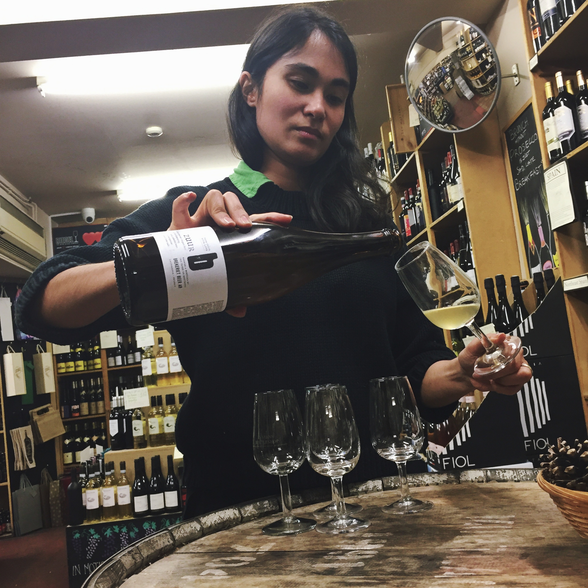
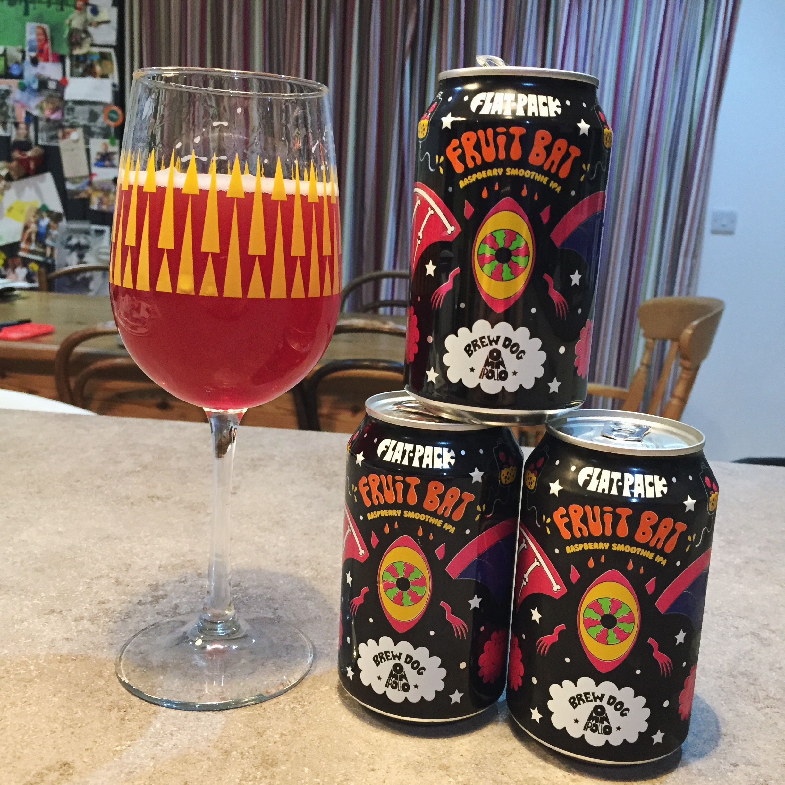
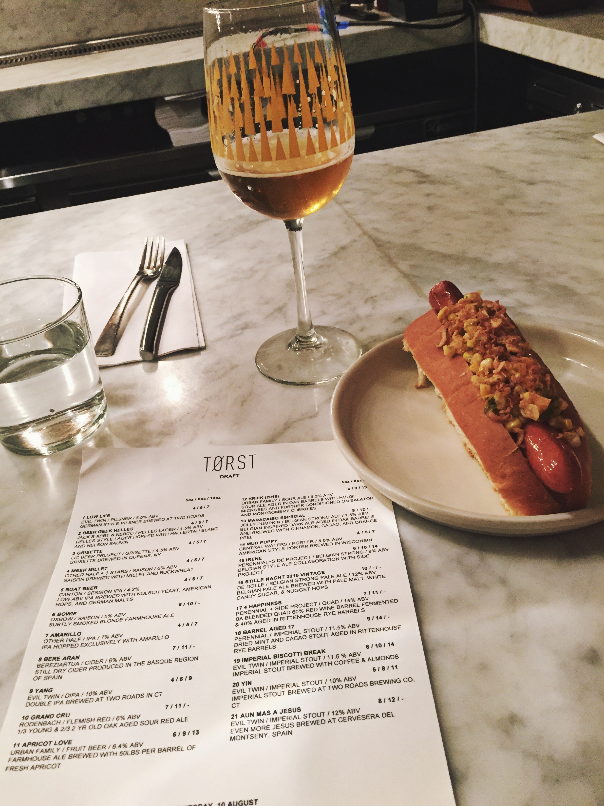

A zingy and acidic sour - bordering on battery acid but not quite! Great colour - cloudy lemonade without the bits. Fine mousse to finish, which lightens the acidity. Clean finish - no farmhouse here! £12.50/750ml at Luvians Bottleshop

Omnipollo // BrewDog : FlatPack Fruitbat. Highlighting the dedication of those in town to try
new things, a case of this was ordered up from London and distributed amongst various St Andrean beer geeks.
Evil Twin: Low Life Pilsner
Posted by: Rachel

Evil Twin: Low Life Pilsner.
First tried at head brewer ddddddd's Brooklyn Bar, Torst, an awesome Danish dddd in the heart of Williamsburg, this pilsner can be
picked up in town at St Andrew's Wine Company, for around a fiver a can. Crisp and refreshing, it's an excellent, if a little pricey intro
to craft beer for lager-lovers.